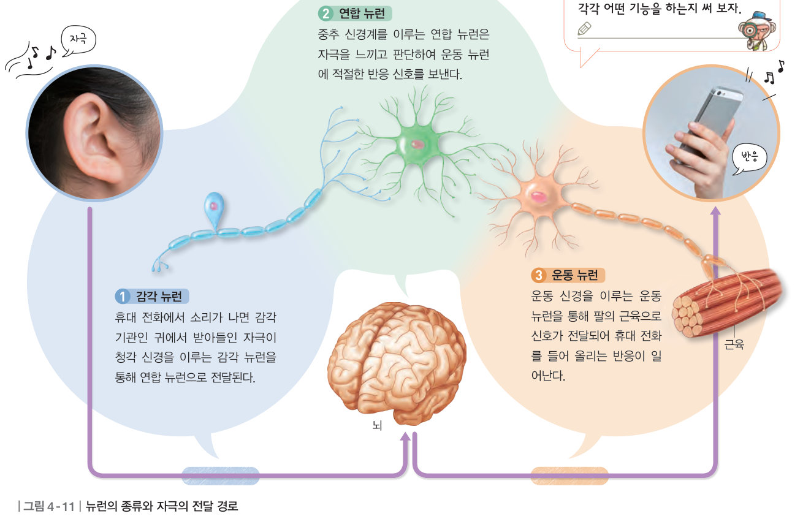
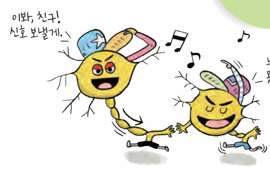
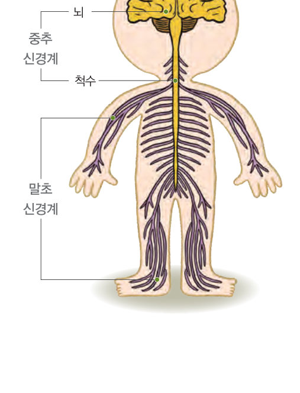
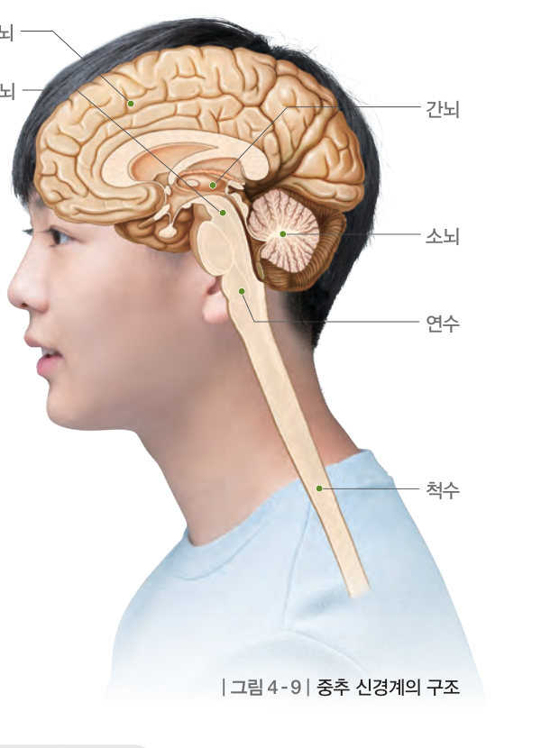
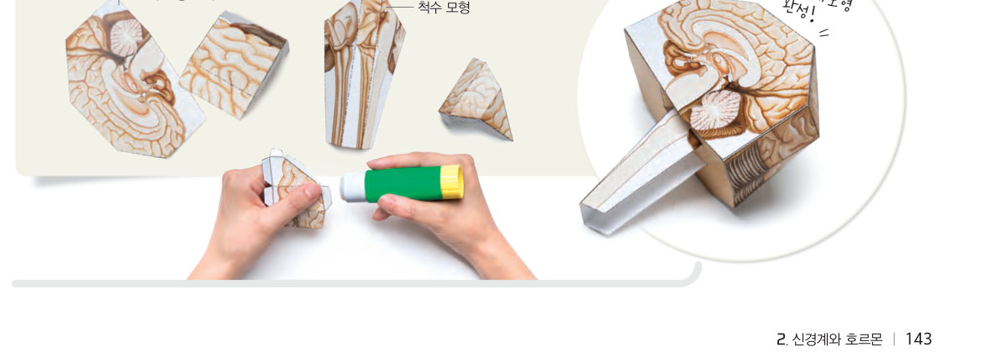
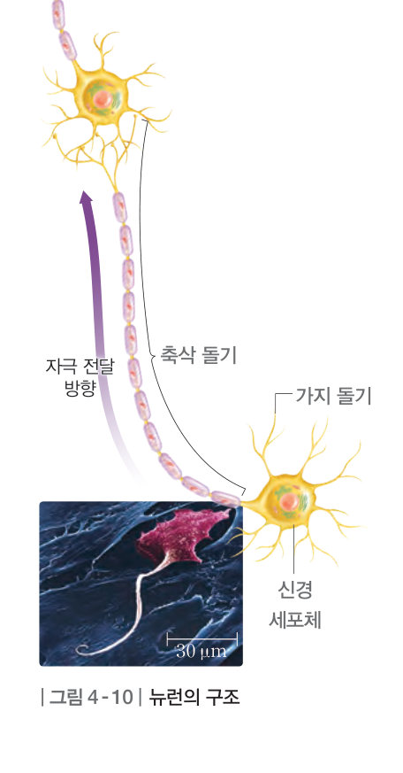

신경계에서 자극은 어떻게 전달될까? 뇌 상황 퀴즈로 대뇌·간뇌·중간뇌·소뇌·연수의 기능을 알아보고, 뉴런 도미노로 감각 뉴런 → 연합 뉴런 → 운동 뉴런의 전달 과정과 운동 뉴런이 끊겼을 때를 확인해 보자.
오늘은 찜질방에 갔어. 어떤 방은 온도가 높아서 땀이 비 오듯 흘렀고, 어떤 방은 온도가 낮아서 온몸이 덜덜 떨렸어. 그런데 땀을 흘리거나 몸이 떨리는 현상은 체온이 일정하게 유지되는 것과 관련이 있대. 체온은 어떻게 일정하게 유지될까?
▶ 이미 배운 내용 | 감각 기관에서 받아들인 자극이 뇌로 전달된다.
🔑 첫 번째 열쇠 신경계를 통해 더위나 추위를 느끼는 과정을 알아본다. · 두 번째 열쇠 신경계를 통해 일어나는 반응의 종류를 확인한다. · 세 번째 열쇠 우리 몸이 체온을 일정하게 유지하는 과정을 알아본다.
이 단원과 관련해 이미 알고 있는 것에 표시해 보자.
야구를 할 때 타자는 날아오는 공을 보고 야구 방망이를 휘둘러 공을 친다. 이는 감각 기관에서 받아들인 자극이 뇌로 전달된 다음, 뇌가 자극을 느끼고 판단하여 운동 기관으로 보낸 신호에 따라 반응이 일어난 것이다. 이와 같이 우리 몸에서 자극을 빠르게 전달하고 판단하여 반응하도록 신호를 보내는 일은 신경계가 담당한다.
신경계는 중추 신경계와 말초 신경계로 구분된다. 중추 신경계는 뇌와 척수로 이루어져 있으며, 자극을 느끼고 판단하여 적절한 신호를 보내는 기능을 한다. 말초 신경계는 감각 신경과 운동 신경으로 이루어져 있으며, 온몸에 퍼져 있어 중추 신경계와 온몸을 연결한다. 감각 신경은 감각 기관에서 받아들인 자극을 중추 신경계로 전달하고, 운동 신경은 중추 신경계에서 보낸 신호를 반응 기관으로 전달한다.


뇌는 대뇌, 중간뇌, 간뇌, 소뇌, 연수로 구분된다. 대뇌는 감각 기관에서 받아들인 자극을 느끼고 판단하여 적절한 신호를 보내 몸의 감각과 운동 조절을 담당하며, 기억, 추리, 감정 등 다양한 정신 활동을 담당한다. 중간뇌는 눈의 움직임, 동공과 홍채의 변화를 조절하고, 간뇌는 체온을 비롯한 몸속의 상태를 일정하게 유지한다. 소뇌는 근육 운동을 조절하여 몸의 균형을 유지하고, 연수는 심장 박동과 호흡 운동 등 생명 유지 활동을 조절한다. 척수는 뇌와 말초 신경 사이에서 신호를 전달하는 통로 역할을 하며, 자신의 의지와 관계없이 일어나는 반응을 조절하는 중추 역할을 한다.

| ⑴ 몸의 균형을 유지한다. | |
| ⑵ 심장 박동과 호흡 운동 등을 조절한다. | |
| ⑶ 체온 등 몸속의 상태를 일정하게 유지한다. | |
| ⑷ 눈의 움직임을 조절하고, 동공과 홍채의 변화를 조절한다. | |
| ⑸ 감각과 운동 조절 및 기억, 추리, 감정 등 정신 활동을 담당한다. |
신경계는 신경 세포인 뉴런으로 이루어져 있다. 뉴런은 신경 세포체, 가지 돌기, 축삭 돌기로 이루어져 있다. 신경 세포체는 핵과 세포질이 있어 여러 가지 생명 활동이 일어난다. 가지 돌기는 다른 뉴런이나 감각 기관에서 전달된 자극을 받아들이고, 축삭 돌기는 다른 뉴런이나 기관 등으로 자극을 전달한다.
뉴런은 기능에 따라 감각 뉴런, 연합 뉴런, 운동 뉴런으로 구분된다. 감각 뉴런은 감각 기관에서 받아들인 자극을 연합 뉴런으로 전달하고, 연합 뉴런은 자극을 느끼고 판단하여 운동 뉴런에 신호를 보낸다. 운동 뉴런은 연합 뉴런에서 보낸 신호를 반응 기관으로 전달한다.

| ⑴ 신경계는 중추 신경계와 말초 신경계로 구분된다. | |
| ⑵ 중추 신경계는 감각 신경과 운동 신경으로 이루어져 있다. | |
| ⑶ 말초 신경계는 온몸에 퍼져 있어 중추 신경계와 온몸을 연결한다. | |
| ⑷ 감각 신경은 근육 같은 반응 기관을 중추 신경계와 연결하며, 중추 신경계의 신호를 반응 기관으로 전달한다. |
| ⑴ 다른 뉴런이나 기관 등으로 자극을 전달한다. | |
| ⑵ 핵과 세포질이 있어 여러 가지 생명 활동이 일어난다. | |
| ⑶ 다른 뉴런이나 감각 기관에서 전달된 자극을 받아들인다. |
| ⑴ 중추 신경계는 뇌와 척수로 이루어져 있다. | |
| ⑵ 연합 뉴런은 감각 신경과 운동 신경을 구성한다. | |
| ⑶ 심장 박동이나 호흡 운동에 문제가 생기면 소뇌에 이상이 생긴 것이다. |
| 평가 기준 | 스스로 평가 |
|---|---|
| 신경계 및 뉴런의 구조와 기능을 설명할 수 있다. | |
| 뉴런을 통해 자극이 전달되는 과정을 모형으로 표현할 수 있다. |